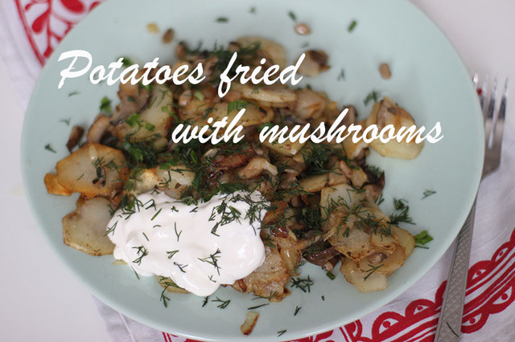

Potatoes fried with mushrooms

Potatoes fried with mushrooms recipe
This simple dish can be quite different depending on the mushrooms you choose.
For example, noble white mushrooms have completely different taste here than oyster
mushrooms or champignons. But most of all people love potatoes fried with chanterelle
mushrooms for their autumn hue and unique flavor. By the way it is much easier
to cook chanterelles than white mushrooms.
Each of the dish ingredients has its own taste and aroma. And the main thing here is
to fry all the products in a way so that they complement each other and not interrupt
the taste. For this purpose it is best to fry potatoes, mushrooms and onions separately,
then mix and bring to full readiness together. The choice of spices depends on mushrooms
you use. White mushrooms and chanterelles have their own delicate flavor and
can not stand rich spices. Here it will be enough to season the dish with salt and
white ground pepper. Nutmeg is perfect in combination with mushrooms and sour cream.
Finished dish is better to sprinkle with fresh herbs, dill, and parsley.
Ingredients:
- 1.2-1.4 lb mushrooms
- 8-10 potatoes
- 2-3 onions
- 2 Tbsp vegetable oil
- 2 Tbsp butter
- salt, spices
Directions:
- First you need to prepare the mushrooms. White mushrooms, aspen or birch boletes
should be boiled. Chanterelles and champignons may not be subject to preliminary
heat treatment. Slice the mushrooms not too finely, they lose a lot of water
during frying. Cut potatoes into slices or strips. Cut onion into cubes.
- Fry chopped mushrooms in little heated vegetable oil. Evaporate all the moisture;
add salt when the mushrooms begin to fry. Put them in a separate bowl.
Then fry onions in butter fry until golden brown. Combine onions with mushrooms.
- Fry potatoes until crisp, sprinkle with salt, and then add mushrooms with onions.
Leave for a while on low heat under the lid, add spices.
- Serve the dish with sour cream and rye bread.
Bon appetite!